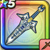

ライトニングダガー
攻略班 7.0点 / ラリホーまわしげりマヌーサスピニングブラストプラズマストライク
くわしい特徴
【レベル別習得スキル】 Lv1【魔法戦士】こうげき魔力+5 Lv1ラリホー（消費MP：10）敵1体を眠りにさそう Lv10まわしげり（消費MP：8）足で周囲をなぎはらい敵全体に威力110%の体技ダメージを与える Lv15マヌーサ（消費MP：16）敵全体を幻でつつみこむ Lv20スピニングブラスト（消費MP：20）敵1体に攻・魔複合威力180%のイオ属性斬撃ダメージを与える Lv30プラズマストライク（消費MP：24）敵全体に攻・魔複合威力150%のデイン属性斬撃ダメージを与える Lv35マシン系へのダメージ+5% Lv40植物系へのダメージ+5% Lv45こうげき魔力+6 Lv50攻撃力+12 【限界突破スキル】 1凸スキルの斬撃・体技ダメージ+5% 2凸スキルの斬撃・体技ダメージ+5% 3凸スキルの斬撃・体技ダメージ+5% 4凸スキルの斬撃・体技ダメージ+5%